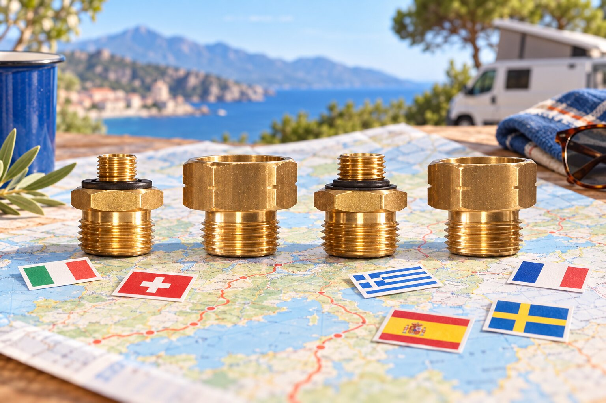
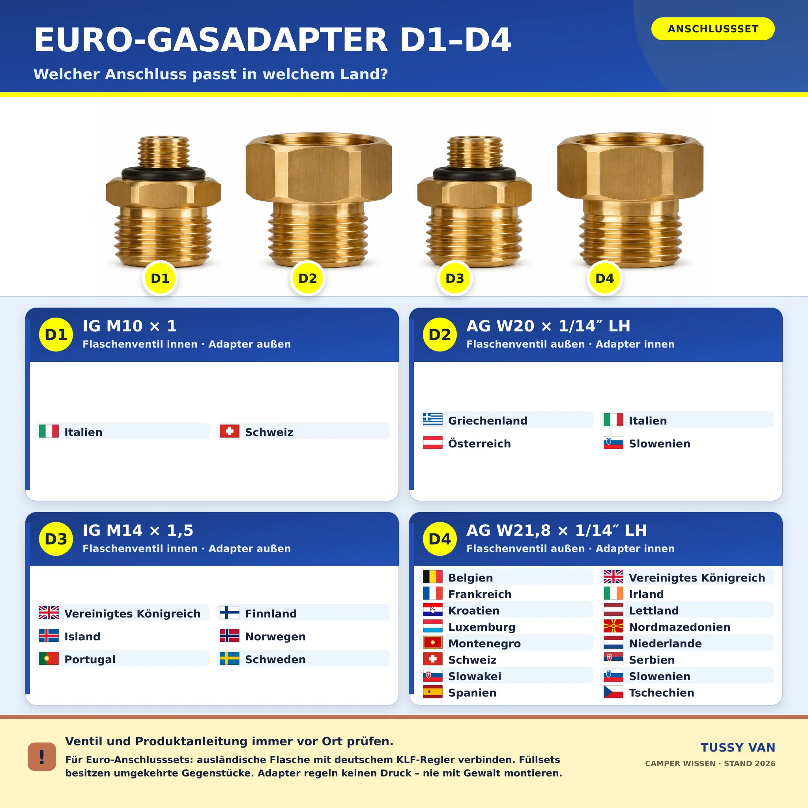

Gasflaschen-Adapter in Europa: Welcher Anschluss passt in welchem Land?
Du stehst mit dem Camper irgendwo in Europa, die deutsche Gasflasche ist leer – und die Flasche im Laden sieht zwar vertraut aus, ihr Ventil aber überhaupt nicht. Genau für diesen Moment gibt es Euro-Adapter. Doch D1, D2, D3 und D4 sind keine vier magischen Universalstecker. Entscheidend ist, ob du eine ausländische Flasche an deine Anlage anschließen oder eine deutsche Flasche von einer autorisierten Füllstelle befüllen lassen möchtest.

Erst klären: Entnahme-Set oder Füll-Set?
Im Handel klingen die Namen fast gleich, technisch sind es aber zwei verschiedene Dinge. Ein Entnahme- oder Anschlussadapter verbindet eine im Reiseland gekaufte beziehungsweise gemietete Gasflasche mit einem deutschen Druckregler. Das Gas strömt dabei aus der ausländischen Flasche in deine Camperanlage. Ein Fülladapter dient dagegen dazu, eine deutsche Gasflasche an die Fülleinrichtung einer autorisierten europäischen Füllstelle anzuschließen.
Die Bezeichnungen D1 bis D4 werden für beide Aufgaben verwendet. Die passenden Innen- und Außengewinde sind dabei jedoch als Gegenstücke ausgeführt. Deshalb reicht es nicht, nur „D4“ zu bestellen. Auf der Packung muss zusätzlich eindeutig Entnahme/Anschluss oder Befüllung stehen. Ein Füllstutzen ist kein Entnahmestutzen – auch wenn beide ähnlich aussehen.

Noch einmal etwas anderes sind die bekannten Tankadapter ACME, Dish, Bajonett und Euronozzle. Sie gehören zu fest eingebauten Gastanks oder zugelassenen, wiederbefüllbaren Tankgasflaschen. Auch Kartuschen nach EN 417 bilden ein eigenes System. Die vier hier beschriebenen D-Adapter ersetzen weder Tankadapter noch Druckregler, Hochdruckschlauch oder Gasfilter.
D1 bis D4 auf einen Blick
Die folgende Gewindeübersicht beschreibt die Anschlussseite eines verbreiteten Euro-Füll-Sets für deutsche KLF-Flaschen. „LH“ steht für Linksgewinde. Beim Entnahme-Set benötigst du das dazu passende Gegenstück; halte dich deshalb an die konkrete Produktkennzeichnung.
M10 × 1
Innengewinde beim Füllstutzen
W20 × 1/14″ LH
Außengewinde, links
M14 × 1,5
Innengewinde beim Füllstutzen
W21,8 × 1/14″ LH
Außengewinde, links
Ländertabelle: Welcher Gasadapter wird wo verwendet?
Die Kernzuordnung folgt der aktuellen Herstellerübersicht des GOK Euro-Sets. Wo mehrere Adapter stehen, sind mehrere Flaschensysteme verbreitet. Zusätzliche Hinweise zeigen Länder, in denen Anbieter oder Regionen besonders häufig abweichen. Der Name des Landes allein ist nie so zuverlässig wie die Ventilkennzeichnung an der konkreten Flasche.
| Land | Häufiger Adapter | Hinweis |
|---|---|---|
| 🇧🇪 Belgien | D4 | Anbieter und Flasche prüfen. |
| 🇩🇰 Dänemark | D3 oder D4 | Je nach Flaschensystem; nicht nur nach Länderflagge wählen. |
| 🇩🇪 Deutschland | meist kein D-Adapter | Deutsche KLF-Flasche und deutscher Regler passen üblicherweise zusammen. |
| 🇪🇪 Estland | häufig D4 | Lokales Ventil vor dem Kauf vergleichen. |
| 🇫🇮 Finnland | D3 | Nur eine autorisierte Stelle darf Flaschen befüllen. |
| 🇫🇷 Frankreich | D4 | Eine lokale Tauschflasche mit Entnahmeadapter ist oft der praktischere Weg. |
| 🇬🇷 Griechenland | D2 | W20-Linksgewinde ist verbreitet. |
| 🇮🇪 Irland | D4 | Flaschenanbieter und Regleranschluss abgleichen. |
| 🇮🇸 Island | D3 | Versorgung vor längeren Etappen planen. |
| 🇮🇹 Italien | D1 oder D2 | Mehrere Systeme sind verbreitet; ältere Tabellen nennen teils weitere Varianten. |
| 🇭🇷 Kroatien | D4 | Füllannahme und Prüffrist der Flasche vorher klären. |
| 🇱🇻 Lettland | D4 | Ventiltyp direkt an der Flasche bestätigen. |
| 🇱🇺 Luxemburg | D4 | Je nach Tauschsystem kann kein Adapter nötig sein. |
| 🇲🇪 Montenegro | D4 | Lokale Verfügbarkeit vor der Reise prüfen. |
| 🇳🇱 Niederlande | D4 | Deutsche Flaschen werden nicht überall getauscht. |
| 🇲🇰 Nordmazedonien | D4 | Herstellerlisten verwenden teils noch den alten Namen „Mazedonien“. |
| 🇳🇴 Norwegen | D3 | Ein zusätzlicher anbieterspezifischer Adapter kann nötig sein. |
| 🇦🇹 Österreich | D2 | Auch andere kompatible Flaschensysteme kommen vor. |
| 🇵🇱 Polen | oft deutsche KLF | Häufig ohne D-Adapter nutzbar, aber den konkreten Anbieter prüfen. |
| 🇵🇹 Portugal | D3 | Lokale Leihflasche plus Entnahmeadapter einplanen. |
| 🇷🇸 Serbien | D4 | Anschluss und zulässige Befüllung vor Ort bestätigen. |
| 🇸🇰 Slowakei | D4 | Gewinde und Dichtung kontrollieren. |
| 🇸🇮 Slowenien | D2 oder D4 | Mehrere Systeme sind gebräuchlich. |
| 🇪🇸 Spanien | D4 | Der Flaschenkragen kann zusätzlich eine passende Anschlusslösung erfordern. |
| 🇸🇪 Schweden | D3 | Je nach Anbieter kann ein weiterer lokaler Adapter nötig sein. |
| 🇨🇭 Schweiz | D1 oder D4 | Ähnlich aussehende Gewinde sind nicht automatisch kompatibel. |
| 🇨🇿 Tschechien | D4 | Ventilkennzeichnung bleibt entscheidend. |
| 🇭🇺 Ungarn | häufig D4 | Vor Ort prüfen, ob die Flasche dem üblichen System entspricht. |
| 🇬🇧 Vereinigtes Königreich | D3 oder D4 | In England, Schottland, Wales und Nordirland sind verschiedene Anbieter-Systeme im Umlauf. |
Dein Reiseland fehlt? Dann bedeutet das nicht, dass es dort kein Gas gibt. Es bedeutet nur, dass sich aus dem Vierer-Set keine zuverlässige allgemeine Empfehlung ableiten lässt. Frage beim örtlichen Flaschenanbieter nach Anschluss, Reglerdruck, Tauschsystem und zulässiger Verwendung im Fahrzeug.
Warum Länderlisten nie hundertprozentig sein können
Gasflaschen werden nicht allein durch ein Land bestimmt. Große und kleine Flaschen, Propan und Butan, regionale Marken, Tauschsysteme sowie ältere und neuere Ventile können unterschiedliche Anschlüsse besitzen. Italien, die Schweiz, Slowenien und das Vereinigte Königreich sind gute Beispiele: Dort tauchen in Herstellerlisten mehrere D-Adapter auf. Wer einfach den erstbesten Adapter aus der Tabelle anschraubt, riskiert ein schief angesetztes Gewinde oder eine undichte Verbindung.
Die sichere Reihenfolge lautet deshalb: erst das Ventil ansehen, dann die Prägung beziehungsweise Gewindeangabe mit der Set-Anleitung vergleichen und zuletzt prüfen, ob das Teil wirklich für Entnahme oder Befüllung gedacht ist. Adapter dürfen niemals mit Gewalt „passend gemacht“ werden. Auch zusätzliche Dichtbänder, ungeeignete O-Ringe oder selbst gebaute Zwischenstücke haben an einer Flüssiggasanlage nichts verloren.
So gehst du beim Flaschenwechsel sicher vor
- Alle Gasgeräte ausschalten, Zündquellen fernhalten und das Flaschenventil schließen.
- Nur im gut belüfteten Flaschenkasten arbeiten und die Verbindung vollständig drucklos machen.
- Ventil, Adapter und Dichtung auf Schmutz, Risse, Verformung und fehlende Teile prüfen.
- Den ausdrücklich passenden Entnahmeadapter nach Herstelleranleitung montieren. Linksgewinde nicht mit Gewalt in die falsche Richtung drehen.
- Druckregler beziehungsweise vorgesehenen Hochdruckschlauch korrekt anschließen. Der Adapter selbst regelt keinen Druck.
- Ventil langsam öffnen und sämtliche neu verbundenen Stellen mit einem dafür zugelassenen Lecksuchmittel kontrollieren.
- Entstehen Blasen oder riechst du Gas: Ventil sofort schließen, lüften und die Anlage nicht benutzen. Keine Flamme zur Lecksuche verwenden.
Deutsche Gasflasche im Ausland befüllen lassen
Ein Euro-Füll-Set ist kein Freibrief für die Selbstbedienung an einer Autogas-Zapfsäule. Herkömmliche deutsche Tauschflaschen dürfen nur von einer dafür autorisierten Füllstelle und nach den dort geltenden Regeln befüllt werden. Die Füllstelle entscheidet, ob sie deine Flasche annimmt. Zustand, Kennzeichnung, Prüffrist und zulässige Füllmenge müssen stimmen. Nach dem Füllen wird der Stutzen wieder entfernt; er bleibt nicht als dauerhafter Anschluss an der Flasche.
Wenn eine Füllstelle ablehnt, ist eine landesübliche Leih- oder Tauschflasche mit dem richtigen Entnahmeadapter oft die bessere Lösung. Bei längeren Reisen kann auch eine fachgerecht eingebaute, zugelassene Tankgasflasche sinnvoll sein. Dafür brauchst du jedoch die passenden Tankadapter und eine Installation, die für diesen Zweck vorgesehen ist – nicht das D1-bis-D4-Füllset aus diesem Beitrag.
Meine sinnvolle Gas-Reisebox
- das zur Route passende, eindeutig beschriftete Entnahme-Set,
- die Originalanleitung des Herstellers, digital und auf Papier,
- intakte Ersatzdichtungen genau für dieses Set,
- zugelassenes Lecksuchspray,
- Arbeitshandschuhe und das vom Hersteller vorgesehene Werkzeug,
- Fotos der eigenen Regler-, Schlauch- und Flaschenkennzeichnung,
- Adresse eines Gasfachbetriebs oder Campinghändlers am nächsten Reiseziel.
Fazit: Die Tabelle ist der Start, nicht die letzte Prüfung
Mit einem passenden Euro-Set bist du auf vielen europäischen Routen deutlich entspannter unterwegs. Besonders D4 deckt viele verbreitete Systeme ab, während D1, D2 und D3 bei bestimmten Ländern und Anbietern entscheidend werden. Trotzdem ist der Blick auf die konkrete Flasche wichtiger als jede Länderflagge. Nimm lieber fünf Minuten für Gewinde, Dichtung und Anleitung – Gas ist ein wunderbarer Reisebegleiter, aber kein Bereich für Improvisation.
Quellen und Datenstand
Stand: September 2026. Technische Grundlage: Herstellerübersicht und Montagehinweise von GOK sowie die Anschlussnorm DIN EN 15202. Sicherheitshinweise zur Camper-Gasanlage: DVGW.
Bis bald und immer gute Fahrt,
eure Tussy 💛